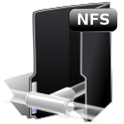

Creación de usuarios, grupos y permisos en Slackware

Aquí aprenderás como crear usuarios, grupos y manejar y administrar permisos en la distribución de Linux Slackware.
VerCompartir datos en una red usando NFS en Slackware
Aquí podremos ver una explicación detallada de como compartir datos en una red Linux usando NFS
verCreación de scripts en Slackware
Aquí aprenderemos diversas formas de realizar scripts y ejecutar los mismos en el sistema operativo Slackware.
Ver